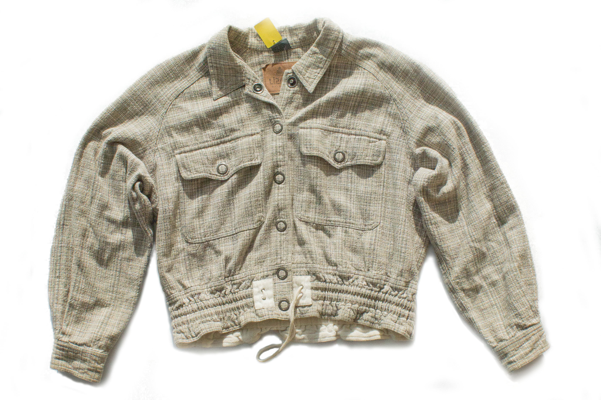

Three years ago my daughter, Aysha, got very sick. One day, she collapsed on the ground and started shaking. I tried everything to get her to stop, but it did nothing. Then about 5 minutes later she woke up, exhausted, with no memory of what had happened. Within the next week she collapsed five more times, each time taking longer and longer to wake up. Within a week Aisha had gone from being a young carefree girl who constantly played outside with her friends, to being barely able to leave the house. The village doctor was unable to help her, and said that all we could do was pray.
I was not going to leave my precious daughters life up to the gods. So I made a decision to do something never done in our village. I took my daughter to the Colombo hospital.
At the hospital the doctor took Aysha away ran a lot of tests. After conducting a brain scan, he came back and told us that she had a severe form of epilepsy. He didn’t know what caused it, but without treatment she would not live to see her next birthday. However there was a new medicine that would allow her to lead a near normal life. The only catch was that it cost half of my husband’s monthly salary. We couldn’t afford it without causing us to go bankrupt, but I also couldn’t let her die.
>My husband and I scavenged up all of the money we could borrow to purchase a one month supply of the medicine. After taking just one dose, the shaking stopped and she went back to her normal carefree self. Once we returned home, I thought long and hard about what to do. I wouldn’t let my family go bankrupt, but I was going to keep my daughter alive. While thinking about this dilemma, I remembered hearing about an opportunity to go work at a Colombo a garment factory. I initially wanted to take my daughter with me, as couldn’t imagine leaving her behind. However I also knew running around with her friends was better than being stuck in a small apartment eating only rice and dal. So against protests from my husband, I left my daughter with him and moved to the city. Now I am able to send money home for Aysha’s medicine, but I only get to see her twice a year. I fear that I am losing her, as I am not there to spend time with her and guide her as she grows older.
This thought haunts me every day at work. I sit down and tie this single knot, synching it tight with the wishful thought that if I do I will keep my relationship with my daughter from falling apart. but every month I’m away; every day I work; every knot I tie, loosens bonds of our relationship. I feel that if I stay I may lose my daughter, but if I don’t, I most certainly will.